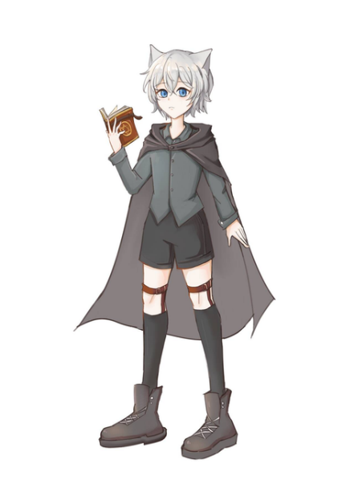
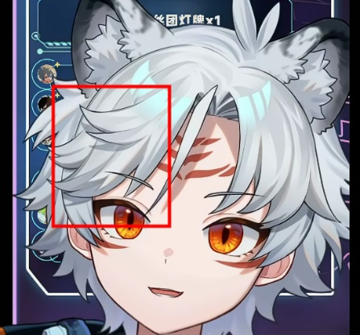
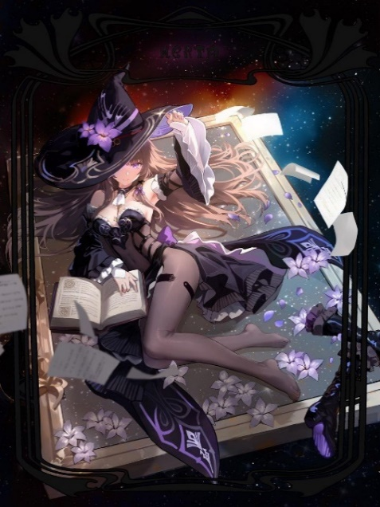
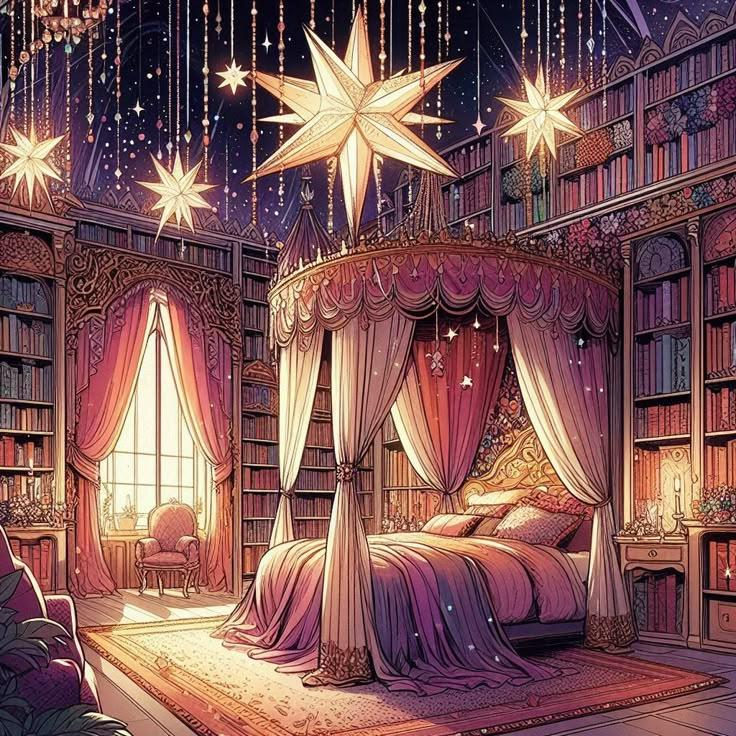

ayu
イラスト制作のための参考資料です。キャラクターデザイン、構図、背景、 雰囲気などのイメージをまとめています。
01 — キャラクター設定
- 名前
- ayu
- 性別
- 男性
- 体型
- 少年体型
- 年齢
- 17歳（実年齢：約120歳）
- 種族
- ハーフエルフ
- 職業
- 貴族の魔法使い
- 身長
- 167cm
特徴
- 真っ白なミディアムヘア。アホ毛が一本ある
- エルフ耳
- 青い瞳
- 浮遊する魔導書を手にしているイメージ
- 腰に防護結界のルーンがある
服装
ダークカラーを基調とした、学院風の貴族らしい普段着。短パンを合わせ、 上からダークグレーのマントを羽織っています。足元は編み上げの ハイカットブーツ＋ロングソックス。両脚のソックスにはガーターベルトを付けています。


デザイン上の変更・希望
- 耳はエルフ耳に変更
- 前髪は右の画像のようなデザインに変更
- アホ毛を追加
- 魔導書は手に持つのではなく、宙に浮いている状態に変更
- 上着は少し短くして、おへそが見えるようにする
- 衣装には模様や装飾品などを少し追加して、より華やかな雰囲気にしていただけると嬉しいです
02 — 追加設定
背景設定
元の世界では、頂点に立つ大魔導師として活躍していました。 古代遺跡にある時空魔法陣の封印を行っていた際、術式の乱れによって 空間崩壊が発生し、偶然にも現代の人間都市へと落ちてしまいました。
性格
知識や未知の魔法に対して純粋な探究心を持っています。内面では仲間との 絆をとても大切にしており、身内には非常に甘い一面があります。 ただし、素直に相手を心配したり、気遣いを言葉にしたりするのは苦手です。
魔力感知
数km以内に存在する細かな魔力の流れや、姿を隠している存在を感知することができます。
無詠唱魔法
専用の魔導書を手にしている場合、詠唱を必要とせず、通常の魔法使いの数倍の速度で 複数の複合魔法陣を構築することができます。
03 — 構図
キャラクターをメインにした構図を希望しています。
- 視点
- 横から見たサイドビュー
- ポーズ
- キャラクターはベッドの上で横向きに寝そべっており、片手でベッドを支え、 もう片方の手で魔導書を持っているようなポーズをイメージしています。


04 — 背景
書斎＋ベッドのある部屋を希望しています。 華やかで少し豪華な雰囲気で、全体的には下の参考画像のようなテイストをイメージしています。
